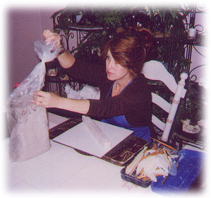

|
 Joy Hughes is a fifty-four year old woman residing in Palm Bay, Florida, who was born and lived most of her life in Brunswick, Georgia. She is an avid lover of all animals, as is seen by her numerous wildlife pieces. She displayed artistic talent as a child in her drawings and in the one piece of sculpture she created at age twelve. She only in the past three years began sculpting as a form of therapy for extensive injuries she received in a fall. From her first attempt, she realized that she could convert her vivid mental images into real life sculptures and was enthralled with the sense of creation at her fingertips. She received some formal training by taking classes on art at Brevard Community College and lessons in sculpting from the Brevard Museum of Art and Science in Melbourne, Florida. She is a very reclusive personality, spending as much time as she is physically able working on the sculpting that has become so much a part of her life. She is currently working on a series entitled “The Faces of Africa” and a series of mythical creatures (yet untitled). She also plans to release two series of collectibles in the Spring of 2002. All of Joy Hughes's sculptures are cast at the Shadetree Studio. Shadetree Studio, tucked beneath the trees along Old Dixie Highway just north of Fort Pierce, Florida, is a full service fine arts foundry. Established in 1989, Shadetree Studio is committed to the highest standards of casting and moldmaking. Staffed with a qualified crew of artist-technicians, the Studio handles a wide range of tasks from larger than lifesize sculptures to tiny detailed reproductions from a shipwrecked treasure. If you wish to have the sculpture attached to a marble or wood base, you may call Pat Cochran at 561-467-0033 or fax Shadetree Studio at 561-467-0411 for an estimate.
News Story appeared in FLORIDA TODAY - Feb. 23, 2001 "Art eases memory loss - Accident victim regains pleasure sculpting in clay"
Palm Bay sculptor Joy Hughes moves slowly through her cramped studio. Wearing a full body and neck brace, the artist has to negotiate the table, a lamp, a chair and a stack of boxes before settling in front of a large clay mermaid dancing freely with a leaping dolphin. She grabs the back of her head and shuts her eyes. The metal plate in the back of her neck has just "clunked." That always unnerves her. Asked about friends, Hughes starts to answer, but falls suddenly quiet. The silence lasts about a half a minute. "What was the question?" she asks. "It has been... I get the feeling when I'm talking to people, they look at me strange." Hughes, 53, suffers from a number of ailments as a result of a fall more than four years ago. What frustrates her the most, though, is the short-term memory loss and problems concentrating she has suffered after the simple act of walking down the stairs proved a life-altering experience for her. Knowing the exasperation of problems with memory, Hughes, a normally private person, wants people to realize memory loss doesn't have anything to do with intelligence or work ethic. Wanting to help others with memory problems, Hughes is one of 110 fine artists from around the country donating artwork to the Brevard Alzheimer's Foundation's third annual Wine Tasting, Quilt Drawing and Art Auction on Saturday evening. About half the artists are from Brevard. While working for Brevard County's Housing and Community Development department in the Brevard Government Center in Viera, Hughes stepped on a clear candy wrapper carelessly tossed onto the concrete stairs. She slipped, tumbling down the stairs into a morass of doctors, worker's compensation forms and others' disbelief. Although Hughes does not suffer from Alzheimer's, she says she knows what it must be like. "It's like butterflies," she says, her hands waving in the air in front of her. "You've got all these thoughts there, but you can't pull them together. Fortunately for Hughes, her long-term memory is intact. She explains in great detail how she and her husband, Ronnie, were childhood sweethearts. How they grew apart, married others, remet in 1989 and married each other the next year. Still, for almost two years, she was "on the Pity Pot," she says. She spent days pacing and listless. She fixed meals, cleaned the house, but didn't want her husband to talk to her, touch her or even look at her. Then, 2 years ago, after so many doors had closed, one opened. At the gentle urging of Ronnie, Hughes returned to the childhood pleasure of sculpting clay. He brought home a little bit of clay from Wal-Mart, and in 15 minutes she sculpted a unicorn she keeps in a place of honor on glassed-in shelves. Her husband saw how the sculpting transported her. He went back and "wiped the store out" of clay. Since then, she has allowed herself the indulgence of becoming transfixed by creating art. She can begin work at 6 in the morning and not stop until 6 at night. It puts the pain on "another level," she said. Two local gallerists, Kimberlina Murray, owner the Fig Tree Gallery in Melbourne, and Jan Moody, co-owner of the Art Vue Galerie in Cocoa, say Hughes has natural talent. "Her work has progressed quite drastically," Murray says. "She started doing clay figurative animals. Now she's branched out into cold cast bronzing and getting more detailed with her sculpture." Moody calls her work "very moving." "She'll sit there with a thing of clay and start working it, and suddenly you realize it's a beautiful (animal). She has an extraordinary talent." Next to her husband, her creativity means the world to Hughes. "There is nothing like feeling less of a person, not worthwhile," she says. "That's what happens when you go from 100 percent healthy to disabled: the stigma of being afraid to go out in public and say the wrong thing. If I never sell a single piece of this art, every time I create something, a piece of me goes into it, and it's a joyful thing. An uplifting experience." |